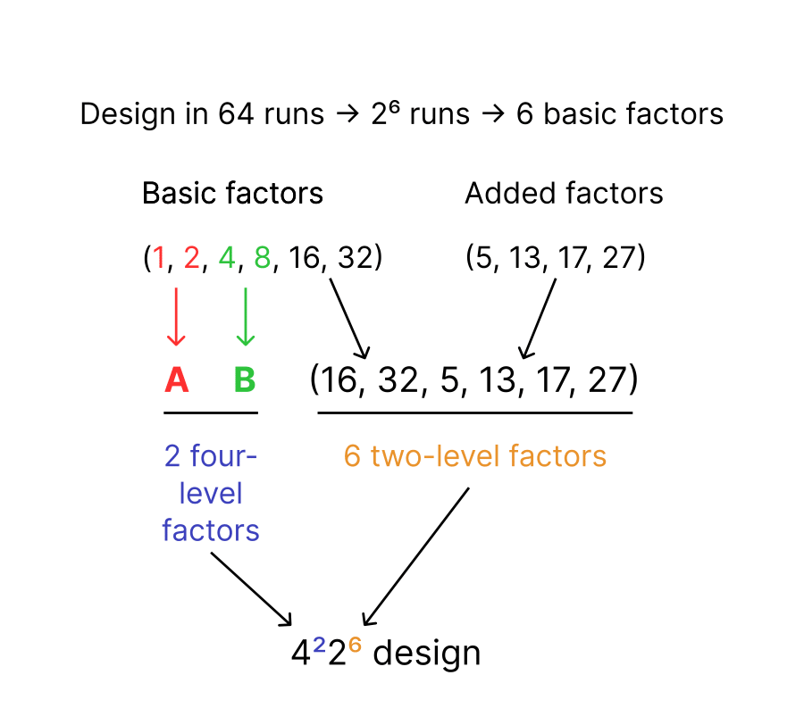

Four-and-two-level designs#
When constructing a design with four-level factors and two-level factors, the four-level factors are always constructed from pairs of basic factors, (see section on Four-level factors). The two-level factors in the design include the remaining basic factors (if any) and the added factors.
Consider the example of a 64-run design with 2 four-level factors and 7 two-level factors. There are \(log_2(64)=6\) basic factors, among which \(2*m=4\) are used to generate four-level factors. Therefore two basic two-level factors are left and only five added two-level factors still need to be defined. In this example, we use the factors 5, 13, 17, 27. The figure below details this process.
{kind=link}
To create the design using the package, we use the fatld.design.Design() class.
To create a design, we only need to specify:
the number of runs as
runsizethe number of four-level factors as
mthe column numbers of the added factors as
cols
The basic factors that weren’t used to generate four-levels factors will automatically be added to the columns of the design.
The full list of columns can be obtained using the Design.cols attribute.
Warning
Columns are always sorted by numbers so basic factors will not always be first in the set of columns of the design.
>>> from fatld.design import Design
>>> D = Design(runsize=64, m=2, cols=[5, 13, 17, 27])
>>> D.cols
[5, 13, 16, 17, 27, 32]
Characteristics#
Several information about a design are available as attributes of the Design object.
The list includes:
runsize: the runsizem: the number of four-level factorsn: the number of two-level factorsk: the number of basic two-level factorsp: the number of added two-level factors
The full list of available attributes is available in the documentation
>>> from fatld.design import Design
>>> D = Design(runsize=64, m=2, cols=[5, 13, 17, 27])
>>> D.runsize
64
>>> D.n
7
>>> D.p
5
>>> D.n == (D.p + D.k - 2 * D.m)
True
Design matrix#
From a Design object you can also obtain the design matrix using the fatld.design.Design.array method.
The design matrix is a \(N \times (m+n)\) matrix, where \(N\) is the runsize.
The four-level factors are always the first columns of the matrix, then come the two-level factors ordered by column number.
If you already have a design matrix as a numpy array, you can create a Design object with it using the fatld.design.from_array() function.
The function will automatically determine the runsize, number of four-level factors and two-level columns.
Modifying a design#
There are three ways you can modify a Design object:
Adding a two-level factor: using the
fatld.design.Design.add_factor()method and providing the number of the factor.Deleting a two-level factor: using the
fatld.design.Design.remove_factor()method and providing the number of the factor to remove. It cannot be a factor used as a pseudo-factor to generate a four-level factor.Flattening the design, i.e., transforming the four-level factors back into its two two-level pseudofactors using the
fatld.design.Design.flatten()method.
>>> from fatld.design import Design
>>> D = Design(runsize=64, m=2, cols=[5, 13, 17, 27])
>>> D_minus = D.remove_factor(13)
>>> D_minus.cols
[5, 17, 27]
>>> D_plus = D.add_factor(25)
>>> D_plus.cols
[5, 13, 17, 25, 27]